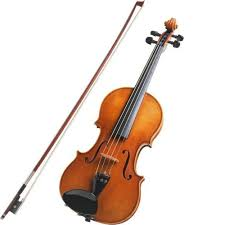
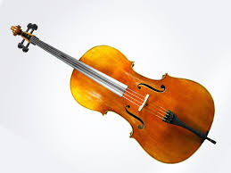

String Instruments

deal
String Violin
The violin is a small string instrument played with a bow, producing bright expressive melodies.
Ksh 33333deal

deal
Cello
The cello is a large string instrument played sitting down, producing deep, warm, emotional tones.
Ksh 33333deal

Traditional Guitar
The traditional guitar is a wooden string instrument played by strumming or plucking melodies worldwide.
Ksh 33333deal